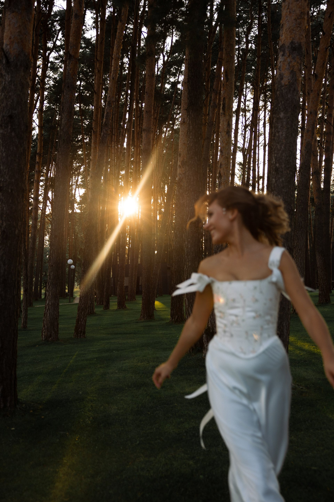

nastya nico
фотограф, москва
женский портрет
из дневника
снимаю, как я вижу тебя.
и этот мир в целом)

мужской портрет
из дневника
учусь видеть мир не только чёрно-белым.
что не скажешь о моих работах)


роспись и свадьба
из дневника
смотреть кадры →
праздник закончился, я взяла кусок торта
в контейнере и поехала домой